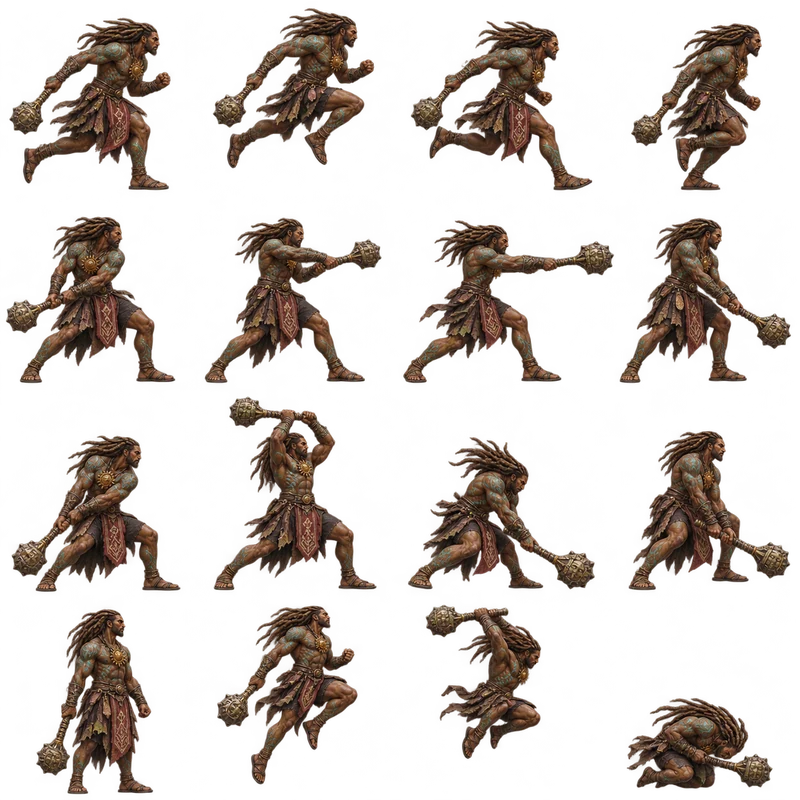
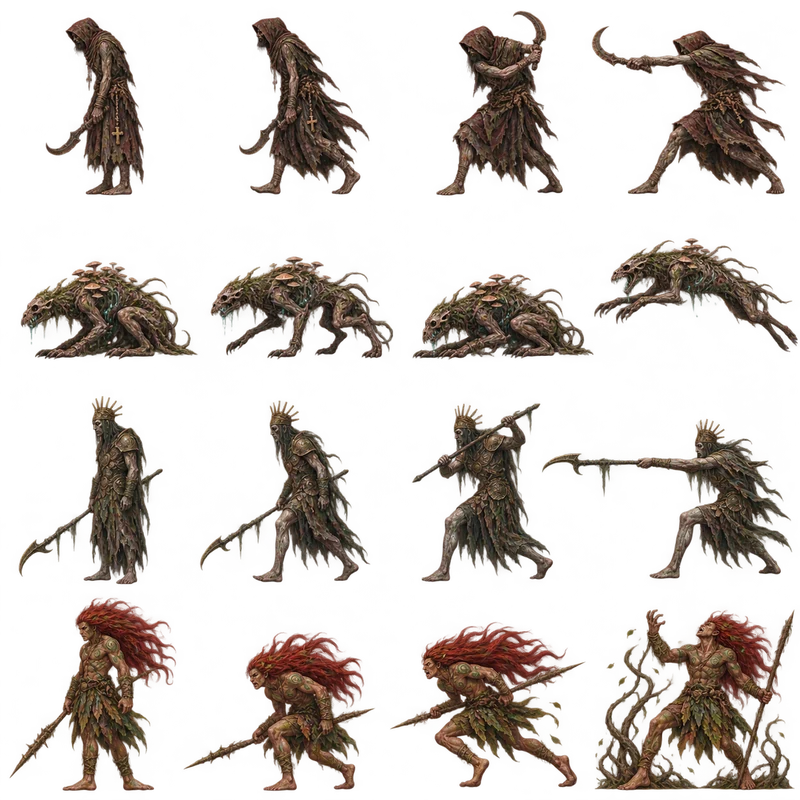
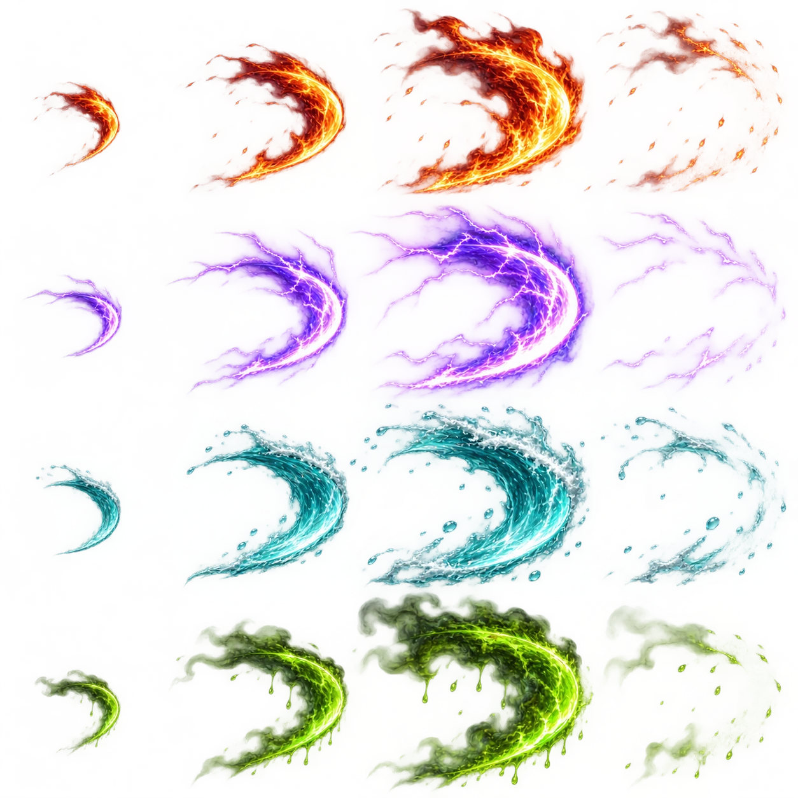

O mundo esqueceu teu nome. A floresta ainda sangra por ti.
O PROTOCOLO DO ESQUECIMENTO
❖
A primeira vigília ainda aguarda.VERSÃO JOGÁVEL 0.6 3 ÁREAS · 1 GUARDIÃO
A MEMÓRIA TE OBEDECE
CONFIGURAÇÕES
FRAGMENTOS DA MEMÓRIA PRIMORDIAL
CRÔNICAS DO EXÍLIO
Para impedir que a entropia devorasse Ratanabá, uma divindade absorveu a corrupção da terra. Seu nome foi apagado da Memória Primordial. Restou o Banido.
Os antigos Guardiões perderam seu nexo e a própria razão. O Curupira repete os caminhos do passado, acreditando que destruir o amigo poderá reiniciar o tempo.
“Meus rastros… mentiram para o chão. Leve meu rastro. Não olhe.”
MOVERA / D ou ← →PULARESPAÇO / WCOMBO DE 3 GOLPESJ · J · JGOLPE PESADOLDEFESA / PARRYF · janela de 150 msESQUIVA / RUPTURAK e depois JATAQUE AÉREOESPAÇO + JMAGIA ELEMENTALU · usa manaMOCHILA / EVOLUIR AURAB / NELEMENTOS1–4 / QALTAR / CURARE / HMAPA / PAUSATAB / ESC
Água prepara a descarga elétrica. O veneno corrói com o tempo. Observa a antecipação dos ataques e golpeia durante a recuperação.

O Banido · clava ritual

Corrompidos e Guardião

Quatro imbuíções elementais
ATÉ A PRÓXIMA VIGÍLIA
O SILÊNCIO CHEGOU
O jogo está encerrado nesta tela. Podes fechar esta aba ou retornar à memória.